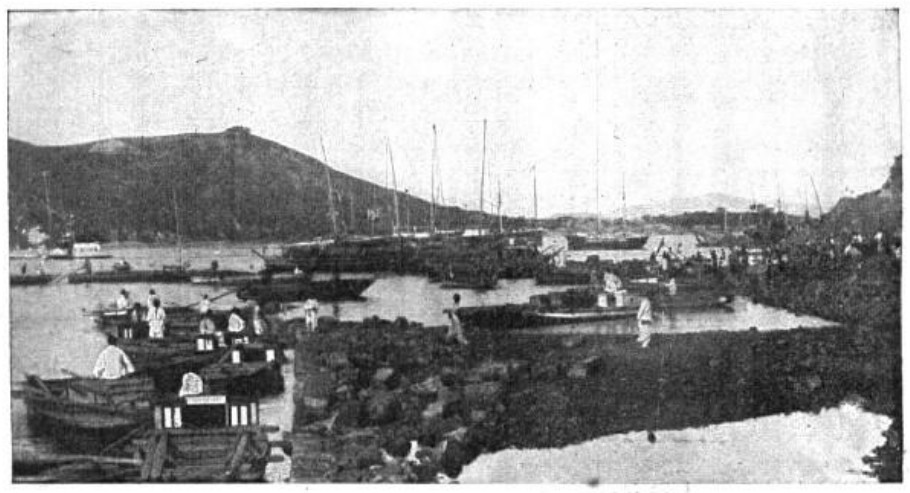

[인천경제&경제사③] 관세는 빚 담보로, 쌀은 인천 부두로… 개항기 인천의 두 길
인천해관 1883년 창설, 1892년 관세 담보 청국 차관… 1889~1890년 황해도·함경도 방곡령과 배상금 11만원
AI경제저널=김갑봉 기자 | 1889년 5월 황해도관찰사 조병철이 방곡령(곡물 수출 금지령)을 내렸다. 일본 상인 이소베와 이시가와가 황해도에서 사들인 곡물 2130석이 인천으로 나가지 못했다. 일본 상인들은 사전 통고가 없었다며 인천감리서에 항의했고, 감리서는 곡물 운반을 허용하라는 통첩장을 보냈다. 조병철은 황해도에는 개항장이 없어 통상장정과 상관없다며 통첩장을 무시했다.
인천항에는 그보다 6년 앞서 해관(오늘의 세관)이 섰다. 해관이 거둔 관세는 나라 곳간을 채우는 돈이다. 1892년 그 인천해관의 관세수입이 청국 차관의 담보로 잡혔다. 같은 부두로 쌀은 일본으로 실려 나갔다.

1. 외국인이 운영한 인천해관
인천해관은 1883년 6월 16일 문을 열었다. 조선 정부는 그해 1월 민영익과 묄렌도르프를 청국 상해에 보내 해관을 세울 돈과 사람을 구하게 했다. 묄렌도르프는 상해 초상국에서 차관을 얻고 청국 해관에서 일하던 외국인 30명가량을 데려왔다. 해관원 자리는 영국인 세무사 스트리플링을 비롯해 독일·러시아·프랑스·미국·청국 사람이 맡았다.
인천해관은 처음에 조미조약 세칙으로 세금을 거뒀다. 그해 11월 3일부터는 세율이 더 낮은 조일통상장정 세칙을 따랐다. 김진태는 2021년 논문에서 1883년 10월 일본 국립제일은행 부산지점이 인천·부산·원산 세 항구의 해관세 징수를 맡게 됐다고 정리한다. 같은 논문은 은행 사사를 인용해 해관세 취급 계약을 1884년으로도 적는다.
김진태는 1883년 10월 8일 다케조에 일본 공사와 묄렌도르프가 비밀리에 교섭해 이 위탁을 맺었다고 적는다. 그는 이 위탁이 1889년 10월 2일 영국인 존슨이 인천 세무사로 취임할 때까지 이어졌다고 본다. 논문은 이 시기를 「관세 농간 시대」라 부르는 견해도 소개한다.
2. 청국 차관의 담보가 된 인천 관세
관세는 빚의 담보로 쓰였다. 김진태 논문을 보면 1892년 11월 조선 정부는 세창양행에서 빌린 10만원을 갚으려고 청국 정부에서 10만냥을 연리 6푼으로 빌렸다. 담보는 인천해관의 관세수입이었다. 차관 담보는 빚을 갚지 못하면 빌려준 쪽이 가져갈 수 있게 잡아 두는 재산이나 수입이다.
같은 논문의 표를 보면 관세는 1905년 재정수입의 29.8%였다가 1909년 10.3%로 줄었다. 김진태는 재정수입이 급증한 까닭을 1907년부터 들어온 대일 재정차관에서 찾는다. 무역총액에 견준 관세수입은 1900년 5.19%, 1905년 5.45%로 표에 적혀 있다.
3. 1889년, 인천으로 가던 쌀을 막은 방곡령
개항장 교역 품목은 둘로 갈렸다. 수입품은 근대 공업 생산품이 대부분이었고, 수출품은 쌀을 비롯한 농산물과 금 같은 1차 산업품이었다. 1877년 약 5600석이던 부산항 쌀 수출은 1881년 4만4000석으로 늘었다. 금액으로는 2만2000여원에서 38만여원으로 불었다.
개항 뒤 일본으로 가는 쌀이 늘자 국내 곡물값이 뛰고 품귀가 일었다. 1889년부터는 일본 흉작이 겹쳐 대일 쌀 수출이 급증했다. 1890년 뒤 조선 총수출액에서 쌀이 차지하는 비율은 57%로 뛰었다. 인천항 한 곳이 아니라 국내 전체 수치다.
일본 흉작으로 쌀값이 오를 것을 내다본 오사카 상인들은 같은 국립제일은행에서 거액을 빌려 곡물을 사들였다. 1889년 10월부터 이듬해 2월까지 다섯 달 동안 사들인 쌀·콩·팥이 6만4773석이었다. 황해도는 심각한 식량난에 빠졌고, 1890년 2월 관찰사 오준영이 다시 방곡령을 내렸다.
1889년 10월에는 함경도관찰사 조병식이 원산항 콩 수출을 1년 동안 막았다. 1889년과 1890년 황해도 방곡령은 모두 일본 대리공사 곤도의 해제 요구 끝에 풀렸다. 1892년 9월 일본은 원산 거류 상인 손해로 14만7000원을 요구했다. 1893년 초 공사 오이시는 세 건의 방곡령 손해에 이자를 얹어 21만7000원을 독촉했다.
1893년 4월 3일 독판 남정철과 일본 공사 오이시가 배상금 11만원에 합의했다. 함경도 거류 일본 상인 몫이 9만원, 황해도 거류 일본 상인 몫이 2만원이었다. 두 사람은 이튿날 6만원은 석 달 안에, 3만원은 5년 안에, 2만원은 6년 안에 내기로 정했다.
데이비드 리카도가 1817년 정리한 비교우위론은 노동이 상대적으로 적게 드는 상품에 특화해 교역하면 양쪽이 모두 이익을 본다고 설명한다. 쌀 수출을 막을 권한은 1883년 조일통상장정 제37관에 묶여 있었다. 지방관은 방곡령을 내리기 한 달 전에 일본 영사에게 알려야 했다. 일본은 통지가 없었거나 늦었다며 손해를 따졌고, 방곡령의 대가는 배상금으로 돌아왔다.
칼 폴라니는 1944년 『거대한 전환』에서 시장이 토지·노동·화폐를 상품으로 만들면 사회가 스스로를 지키려 맞선다고 봤다. 그는 이를 이중운동이라 불렀다. 양식이 빠져나가자 관찰사들이 방곡령으로 곡물을 막은 일은 이 틀로 읽을 수 있다.
4. 정미소와 미두거래소, 인천에 선 쌀의 장치
쌀을 배에 싣는 일은 사람이 했다. 조운이 폐지된 뒤 포구의 객주는 담군(擔軍)이라는 부두 인부를 써서 짐을 부렸다. 정미소는 벼를 찧어 실어 낼 쌀로 만드는 곳이다. 박이택은 개항장에 미곡 수출을 배경으로 외국인이 근대식 정미소를 세웠다고 정리한다.
쌀을 실어 내는 장치도 인천에 섰다. 1889년 일본인이 인천정미소를 세웠고, 1892년에는 미국인 타운센드가 정미소를 차렸다. 타운센드 정미소는 엥겔식 정미기와 60마력 증기기관을 들였다. 60마력은 같은 무렵 인천정미소 원동기(4마력)의 15배다(연구소 계산).
1896년에는 인천에 사는 일본인이 일본 영사 인가를 받아 미두거래소를 열었다. 미두거래소는 쌀을 미리 사고파는 선물 거래소다. 거래 방식은 일본 거래소의 선물청산거래와 같았다. 시장 분규로 해산 명령을 받았다가 1899년 6월 다시 문을 열었다.
일본 국립제일은행은 두 길에 모두 나온다. 김진태가 정리한 대로 1883년 무렵 세 항구의 해관세 징수를 위탁받았고, 1889~1890년에는 황해도 곡물을 사들인 오사카 상인에게 돈을 댔다. 1892년 인천 관세가 청국 차관의 담보로 잡힌 해에 인천에는 60마력 정미소가 섰다.
참고문헌
논문과 연구서
- 김진태, 「조선개항과 근대 관세제도에 관한 연구」, 『사회과학논총』 제45권 제2호, 2021년 12월, 47~75쪽. https://www.konkuk.ac.kr/bbs/ssori/1396/904532/download.do
- 「해관의 개설과 관세의 수세」(Ⅱ-3-2-(2) 상업의 보호와 수세정책), 『신편 한국사』 38 개화와 수구의 갈등, 국사편찬위원회 우리역사넷. https://contents.history.go.kr/mobile/nh/view.do?levelId=nh_038_0030_0030_0020_0020
- 김윤희, 「개항과 쌀 수출」, 『한국문화사 26 쌀은 우리에게 무엇이었나』, 국사편찬위원회 우리역사넷. https://contents.history.go.kr/mobile/km/view.do?levelId=km_026_0060_0010_0010_0010
- 칼 폴라니, 『거대한 전환』, 홍기빈 옮김, 도서출판 길, 2009(원저 1944).
- David Ricardo, 『On the Principles of Political Economy and Taxation』, London: John Murray, 1817. https://www.gutenberg.org/ebooks/33310
공공기관 자료
- 박준형, 「인천해관」, 『한국민족문화대백과사전』, 한국학중앙연구원, 집필 2016, 최종수정 2023.2.7. https://encykorea.aks.ac.kr/Article/E0078166
- 이종춘, 「방곡령사건」, 『한국민족문화대백과사전』, 한국학중앙연구원, 집필 1995, 최종수정 2023.2.7. https://encykorea.aks.ac.kr/Article/E0021663
- 박기주, 「인천미두거래소」, 『한국민족문화대백과사전』, 한국학중앙연구원, 집필 2016, 최종수정 2023.2.7. https://encykorea.aks.ac.kr/Article/E0078075
- 김봉석, 「부두 노동자」, 『한국민족문화대백과사전』, 한국학중앙연구원, 집필 1995, 최종수정 2023.2.7. https://encykorea.aks.ac.kr/Article/E0024130
- 박이택, 「공업」, 『한국민족문화대백과사전』, 한국학중앙연구원, 집필 2024, 최종수정 2025.11.25. https://encykorea.aks.ac.kr/Article/E0004387
[사진 출처]
- [사진1] Angus Hamilton, 『En Corée, esquisse historique』(Léon Bazalgette 옮김, 1904, 영어 원서 『Korea』) 도판 「Vue générale du port de Chemulpo」, 위키미디어 공용, 퍼블릭 도메인. https://commons.wikimedia.org/wiki/File:Hamilton_-_En_Cor%C3%A9e_-_p040.png
관련기사
- [인천경제&경제사②] 1883년 인천 개항장, 관세권은 일부 회복, 조계 땅은 「영구히」 조차
- [인천경제&경제사①] 인천 1인당 생산 11위·가계소득 7위, 인천 안 소비는 특·광역시 꼴찌
저작권자 © AI경제저널 무단전재 및 재배포, AI학습 및 활용 금지